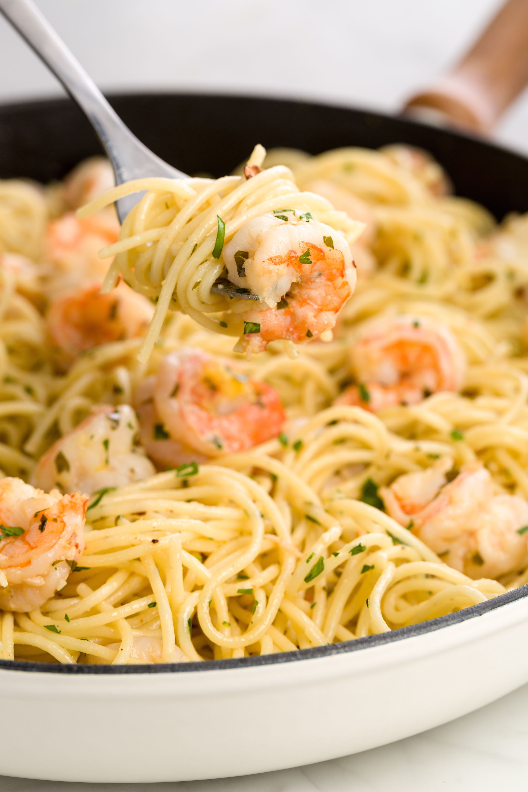

Shrimp Scampi

My favorite Shrimp Scampi recipe so far!
I like to turn Shrimp Scampi into a pasta dish, because why not? A lot of pasta dishes can be super heavy, but, rest assured, this one shall not be. It is light and easy.
I used this recipe from Cafe Delites with a twist. I make it as easy as possible to prepare. Let's get started!
Ingredients:
- shrimp
- thin spaghetti pasta
- butter
- minced garlic, lots of it
- red pepper flakes
- lemon juice
- parsley
Steps:
- Start by cooking your noodles. Bring six cups of water to a boil and cook your noodles al dente.
- In a big sauce pan, sautee your shrimp on medium-high heat with butter until almost cooked. Remove from sauce pan.
- Lower the heat to low and cook your garlic with a bit more butter. Add lemon juice and noodles into the pan.
- Lastly, incorporate shrimp, parsley, and desired seasonings to the sauce pan. Mix until thicken and serve!